05
Ride
The workout, the response and the controls—together.
Follow personalised targets with the information that matters under pressure: actual and target power, heart rate, cadence, interval time, W/kg, percentage of FTP and the current training zone.
Live ERG controlFree Ride ModeWorkout biasThree ride views
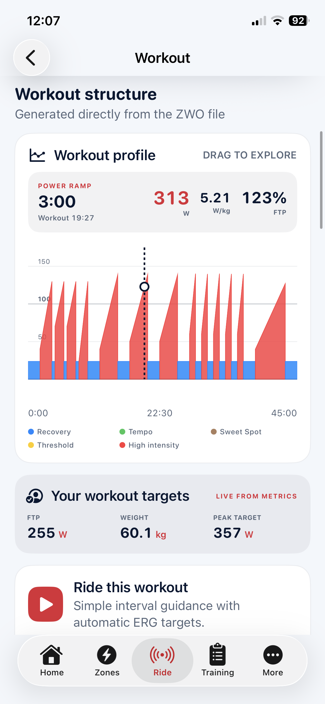
Workout Ride
One continuous workout. Three ways to see it.
Press play and let ERG mode apply each target using your FTP. Change the screen without interrupting the workout, its telemetry or trainer control.
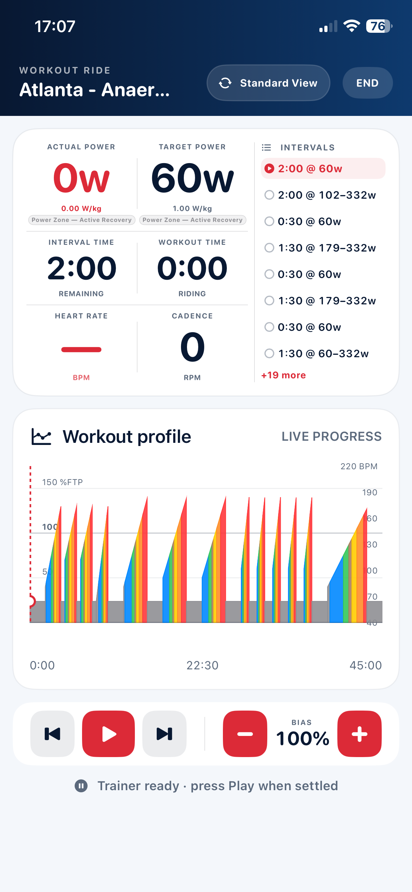
Free Ride
Ride freely—or ask the trainer to hold your target.
Start in Free Ride Mode or select a target for ERG control. Live power, cadence, heart rate and W/kg remain visible while the rolling 120-second trace builds a colour-coded record of your effort.
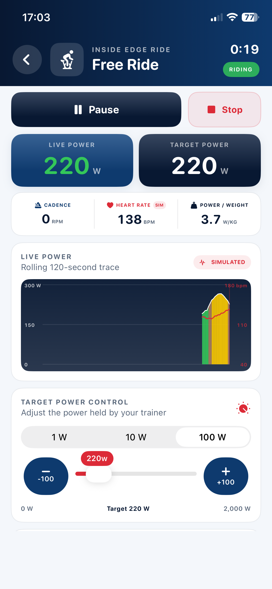
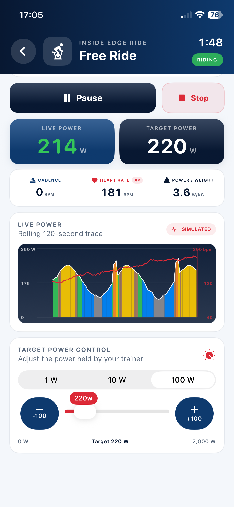
Performance Metrics
Swipe through the ride. See every number at full scale.
Keep the essential workout targets in front of you, then move continuously through live power, ride averages and heart-rate performance. Large, high-contrast cards stay readable when the effort gets hard.
Workout data→Power performance→Ride averages→Heart-rate performance↻
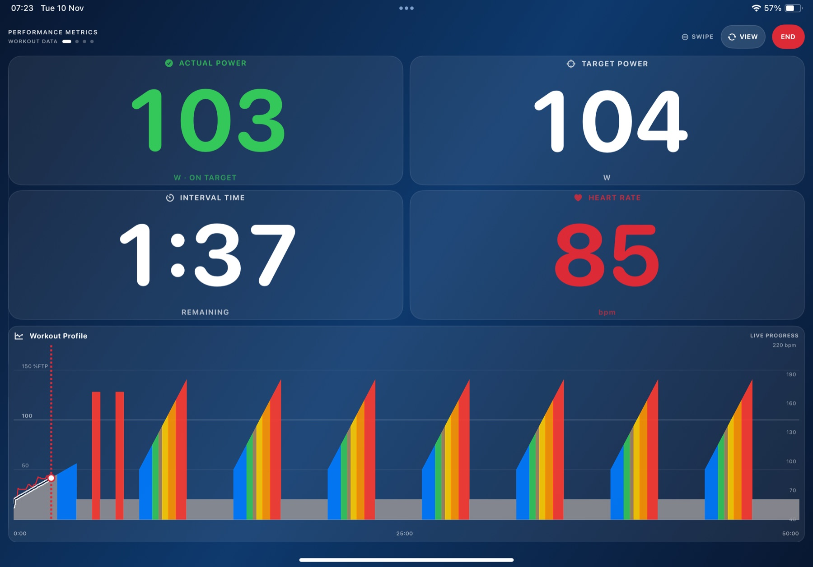
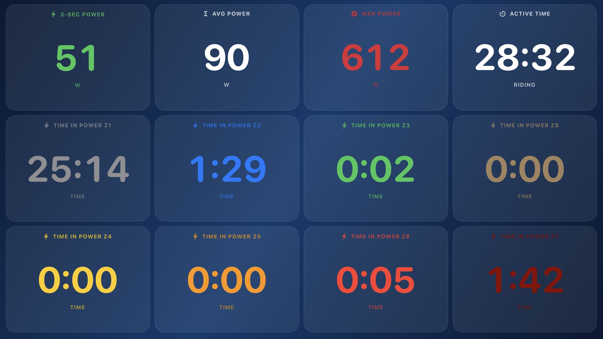
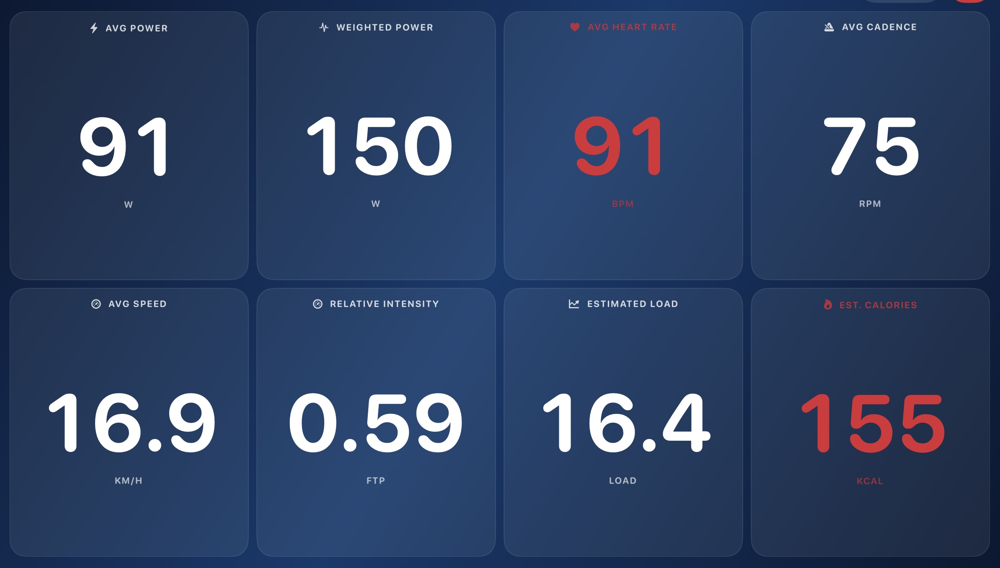
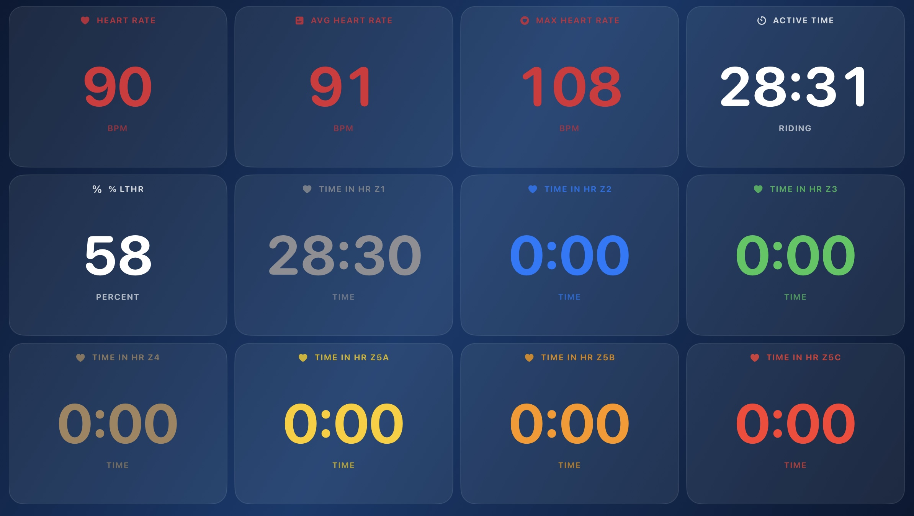
Custom Performance Metrics
Your ride. Your measurements. Your screen.
Choose how much information you want and place each metric where you expect to find it. The in-app preview follows the current device orientation so the finished screen is clear before the workout starts.
- 4 or 6 metrics with the live workout graph
- 8 or 12 metrics without the graph
- Portrait and landscape arrangements
- Live, timing and performance measurements
- Real-time interval-average power and heart rate
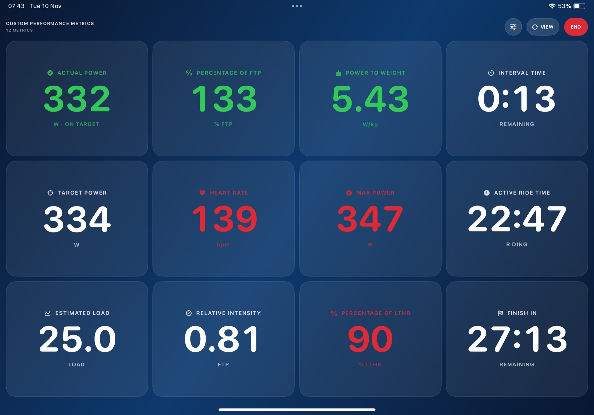
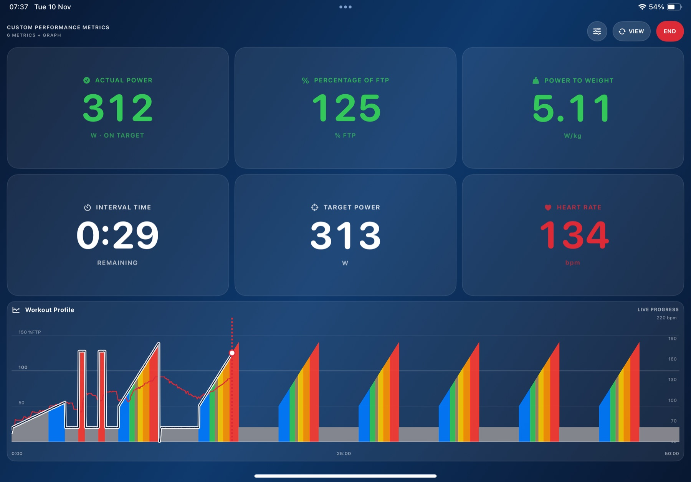
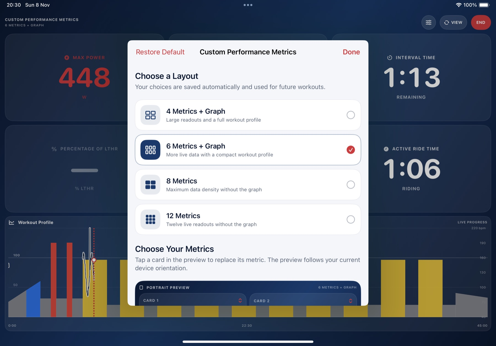
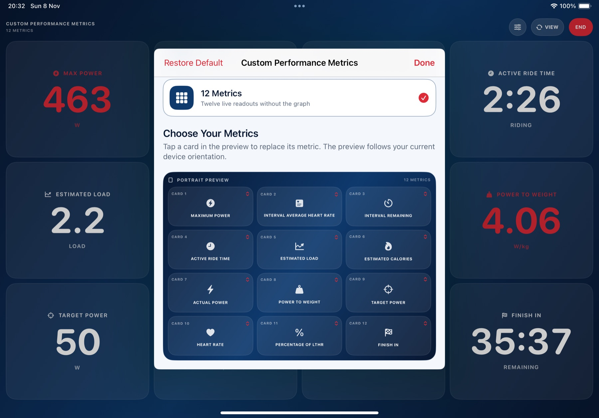
Designed for the effort
Useful when looking at the screen is the last thing you want to do.
Large digital readouts and clearly separated controls make the screen easier to use during hard intervals. Tap to reveal the movable workout controls, change the view when needed and keep the data hierarchy consistent across iPhone and iPad.
- Actual and target power shown separately
- Live zone names and target-status guidance
- Tap-to-reveal pause, skip and workout-bias controls
- Performance pages and a personalised metrics screen
- Portrait and landscape layouts for iPhone and iPad
Next: Review
Keep the ride when the final interval ends.
Review the completed graph and performance metrics, save a readable local history or export the ride.